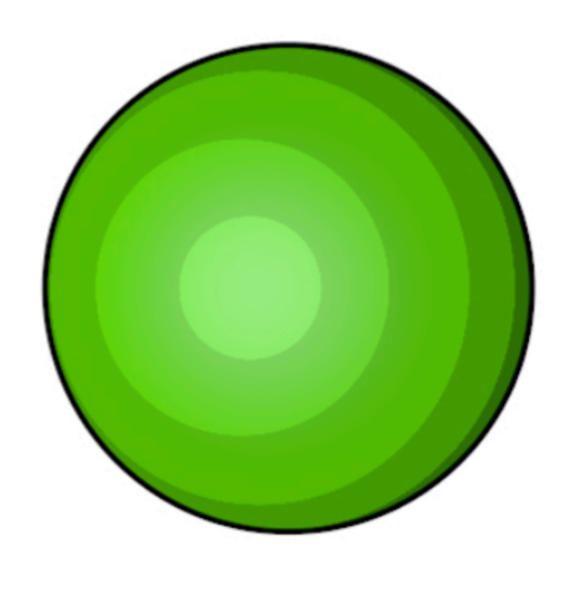
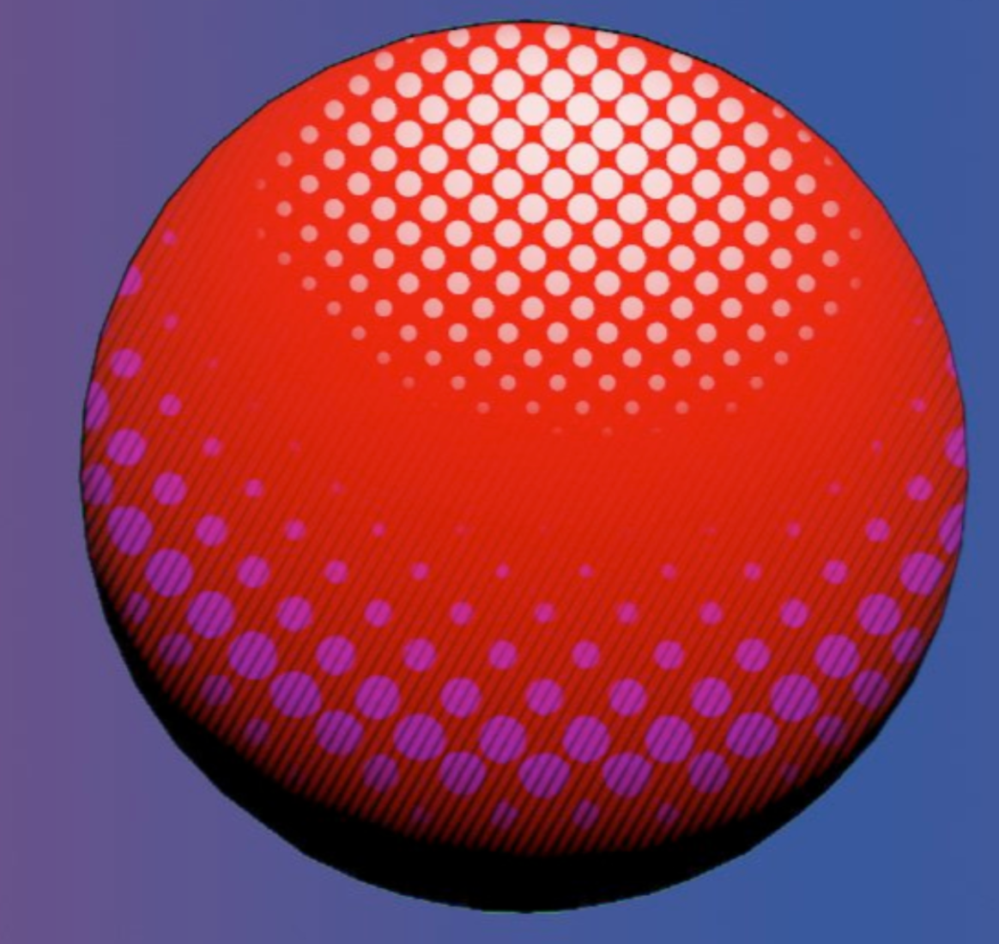
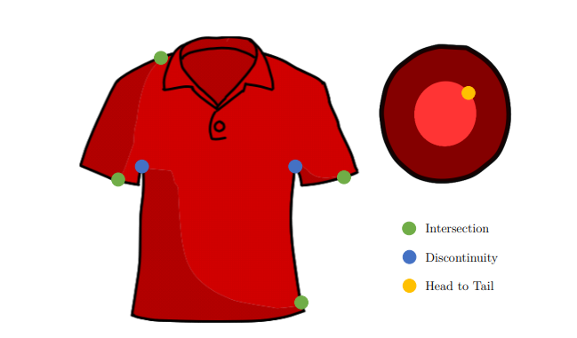

We will be reimplementing the semi-automatic shading technique for 2D images as described by the paper "2D Shading for Cel Animation" by Hudon et. al. We will improve upon the accuracy of the model while utilizing new shading techniques.
Optimization of real time shading is important because these processes
often include lots of simple, repetitive math. There is a lot of room
for speed up through methods like multithreading/parallelization.
The main challenge will be to successfully parallelize the shaders and
get them to work in real time as we are moving around the environment.
We are working as well primarily with very heavily stylized shading
styles, which may require additional workshopping to implement.
Cel shading in animation is a relatively new area. We will examine
previous research papers including 2D Shading for Cel Animation by
Hudon, Pagés, Grogan, Ondrej, and Smolié, which implements a
semi-automatic shading tool which can be used for image generation or
animation. We improve upon this tool by adding multiple light sources
and using a halftone shading method rather than a block shading method.
We think that this will be an interesting challenge because a
semi-automatic shading tool is one that could improve different styles
of comic art and animation.
We plan to generate multiple 2D images using a modified version of cel (toon) shaders where the shading is shown via dots (halftone shading) rather than blocks (images below). We want to first be able to understand how to automate shading systems for 2D images and be able to implement self-shadowing techniques while ensuring accuracy. The quality of the outcome will be determined by the accuracy of the placement of shadows in a rendering of a 2D image. It should also be noted that adding additional functionality will possibly cause our system to run slower than the one described in the paper and make a difficult final comparison in terms of performance.
Here are some examples of images we may hope to create!
|

|

|
|

|
As a baseline, as we implement the replica version of the cel shader as defined by the paper we linked, we will compare our rendering times for similar simulations with those listed in the paper. As we attempt to both optimize and add functionality to our system, quality can be measured by comparing rendered images from our project with those in the paper, where we will hopefully see an improvement in quality, and performance can be measured in the runtime of our code versus metrics from the paper. We will also create a demo of rendering each image with and without Pencil2D and comparing rendering times with the original paper.
If we end up being ahead of schedule, we would like to animate a sequence of images where the light source(s) change(s) or a scene where there are multiple light sources. This would only be implemented after the baseline plan because it would require a lot more work with Pencil 2D and would only be possible if the model created above had a high accuracy with shading.
Software: Pencil2D–developed in C++, using QT framework. Pencil2D is open source with a fairly active contributor base.
Paper Citation (LINK)
Hudon, Matis, et al. “2D Shading for Cel Animation.” Proceedings of the Joint Symposium on Computational Aesthetics and Sketch-Based Interfaces and Modeling and Non-Photorealistic Animation and Rendering, ACM, 2018, pp. 1–12, https://doi.org/10.1145/3229147.3229148.
Cel Shading Resources